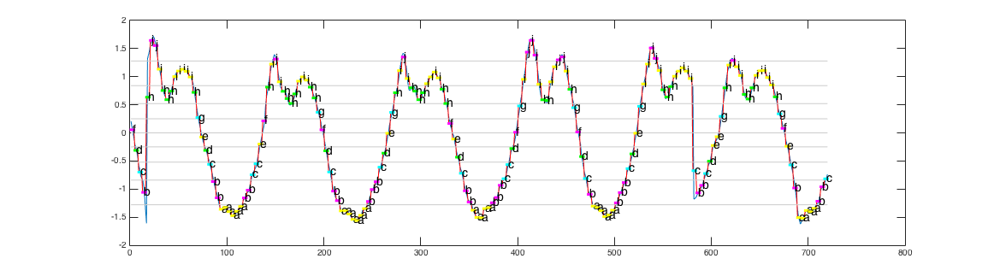
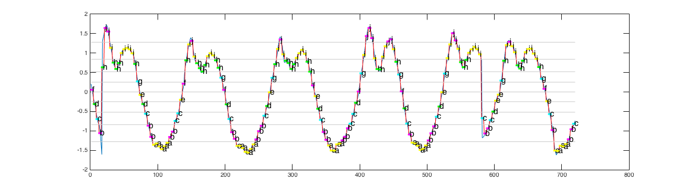

Exercise analysis
Jan Macháček @honzam399

So, tell me again
how everything's fine in production!
It's all wrong
- Data loss from sensors, naïve padding
- Strict network quality requirements
- Large amounts of (unnecessary) data sent on network
- Insufficient feedback on machine learning results
- No timely feedback to the users
- One failing request resulted in offline session
- User experience simply not slick enough
What now?
- Better sensor and signal processing
- Shorter experiment cycle
- Distributed lambda architecture with feedback

More on the phone
- Responsive
- Resilient
- Core components in C++
- Multi-platform: buildable & testable independently
- Smallest possible device-only code
- Sane development tools (e.g. AppCode, CLion, emacs)

function [freq, period, power] = sigfft(xs)
Y = fft(xs);
Y(1) = [];
n = length(Y);
power = abs(Y(1:floor(n/2))).^2;
nyquist = 1/2;
freq = (1:n/2)/(n/2)*nyquist;
period = 1./freq;
index = power == max(power);
freq = period(index);
end
M = readtable('all_4.csv');
ads = table2array(FM);
time = 1:height(FM);
[freq, period, power] = sigfft(ads);
hold on;
plot(time, ads);
plot(period, power);
hold off;
Mat result(0, source.cols, source.type(), Scalar(0));
KalmanFilter KF(2, 1, 0);
KF.transitionMatrix = (Mat_<float>(2, 2) << 1, 1, 0, 1);
Mat_<float> measurement(1, 1); measurement.setTo(Scalar(0));
int16_t zero = source.at<int16_t>(0, 0);
KF.statePre.at<float>(0) = 0;
KF.statePre.at<float>(1) = 0;
setIdentity(KF.measurementMatrix);
setIdentity(KF.processNoiseCov, Scalar::all(1));
setIdentity(KF.measurementNoiseCov, Scalar::all(1));
setIdentity(KF.errorCovPost, Scalar::all(2));
Mat col = source.col(0);
for (int j = 0; j < col.rows; ++j) {
// First predict, to update the internal statePre variable
KF.predict();
// The update phase
measurement(0) = col.at<int16_t>(j);
float estimate = KF.correct(measurement).at<float>(0);
...
}
exercise_decider::freq_powers exercise_decider::fft(const Mat &source) const {
Mat filtered;
Mat tmp;
smooth(source, filtered); // convolve with [.006, .061, .242, .383, .242, .061, .006]
filtered.convertTo(filtered, CV_32FC1);
dft(filtered, tmp, DFT_COMPLEX_OUTPUT);
exercise_decider::freq_powers result(10);
for (int i = 1; i < tmp.rows / 2; ++i) {
Complexf v = tmp.at<Complexf>(i, 0);
exercise_decider::freq_power x { .frequency = tmp.rows / i, .power = pow(abs(v), 2) };
result.push_back(x);
}
return result;
}
exercise_decider::exercise_result exercise_decider::has_exercise(
const raw_sensor_data &source, state &state) {
std::vector<freq_powers> fps = { fft(source.data().col(0)), ... };
const double min_peakiness = 1e+8;
auto &curr_fp = fps[state.m_axis];
auto last_fp = state.m_freq_powers[state.m_axis];
state.m_freq_powers = fps;
const double frequency_epsilon = curr_fp.peak_frequency() * 0.2; // 20% drift of frequency OK
bool frequency_drifted = ...
bool peakiness_drifted = ...
if (peakiness_drifted || frequency_drifted) { return no; }
return yes;
}
 

raw_sensor_data decode_single_packet(const uint8_t *buffer);
class sensor_data_fuser {
public:
fusion_result push_back(const raw_sensor_data &decoded,
const sensor_location_t location,
const sensor_time_t wall_time);
void exercise_block_start(const sensor_time_t now);
void exercise_block_end(const sensor_time_t now);
};
class ensemble_classifier {
private:
std::vector<svm_classifier> m_classifiers;
public:
ensemble_classifier(const std::vector<svm_classifier> classifiers);
classification_result classify(const std::vector<fused_sensor_data>& data);
};
I didn't mean to scare you...
#import <Foundation/Foundation.h>
@interface MRPreclassification : NSObject
- (void)pushBack:(NSData *)data
from:(uint8_t)location
withHint:(MRResistanceExercise *)plannedExercise;
@property id<MRExerciseBlockDelegate>
exerciseBlockDelegate;
@property id<MRDeviceDataDelegate>
deviceDataDelegate;
@property id<MRClassificationPipelineDelegate>
classificationPipelineDelegate;
@end
#import <Foundation/Foundation.h>
#import "MuvrPreclassification/include/..."
using namespace muvr;
@implementation MRPreclassification {
std::unique_ptr<sensor_data_fuser> m_fuser;
std::unique_ptr<ensemble_classifier> m_classifier;
}
- (instancetype)init {
self = [super init];
m_fuser = new sensor_data_fuser();
NSString *fn = [[NSBundle mainBundle] pathForResource:@"features" ofType:@"libsvm"];
std::string libsvm([fn stringByDeletingLastPathComponent].UTF8String);
auto classifiers = classifier_loader().load(libsvm);
m_classifier = new ensemble_classifier::ensemble_classifier(classifiers);
return self;
}
- (void)pushBack:(NSData *)data
from:(uint8_t)location
withHint:(MRResistanceExercise *)plannedExercise {
const uint8_t *buf = reinterpret_cast<const uint8_t*>(data.bytes);
raw_sensor_data decoded = decode_single_packet(buf);
if (_deviceDataDelegate != nil) [_deviceDataDelegate ...];
auto fusionResult = m_fuser->push_back(decoded, sensor_location_t::wrist, 0);
if (_exerciseBlockDelegate != nil) [_exerciseBlockDelegate ...];
auto result = m_classifier->classify(fusionResult.fused_exercise_data());
if (_classificationPipelineDelegate != nil) [_classificationPipelineDelegate ...];
}
@end
class MRExerciseSessionViewController : UIPageViewController,
MRDeviceSessionDelegate,
MRDeviceDataDelegate,
MRExerciseBlockDelegate,
MRClassificationPipelineDelegate,
MRExercisePlanDelegate {
func deviceSession(session: DeviceSession, sensorDataReceivedFrom deviceId: DeviceId,
atDeviceTime time: CFAbsoluteTime, data: NSData) {
preclassification!.pushBack(data, from: 0, withHint: nil)
}
func classificationCompleted(result: [AnyObject]!, fromData data: NSData!) {
userClassification = MRExerciseSessionUserClassification(...)
classificationCompletedViewController?.
presentClassificationResult(..., onComplete: logExerciseExample)
}
private func logExerciseExample(example: MRResistanceExerciseSetExample) {
self.state!.postResistanceExample(example)
if let x = example.correct {
x.sets.forEach { self.plan!.exercise($0 as! MRResistanceExercise) }
}
}
}
Akka


object ProfileService extends Directives
with CommonMarshallers with CommonPathDirectives {
def userProfileRoute(userProfile: ActorRef,
userProfileProcessor: ActorRef)
(implicit _: ExecutionContext) =
path("user") ~
path("user" / UserIdValue) ~
path("user" / UserIdValue / "check") ~
path("user" / UserIdValue / "image") ~
path("user" / UserIdValue / "device" / "ios") ~
path("user" / UserIdValue / "device" / "android")
}
class UserProfileProcessor(userProfile: ActorRef)
extends PersistentActor with ActorLogging {
override def receiveRecover: Receive = ...
override def receiveCommand: Receive = ...
}
var accounts: KnownAccounts = KnownAccounts.empty
override def receiveCommand: Receive = {
case UserRegister(email, _)
if accounts.contains(email) ⇒
sender() ! \/.left("Username already taken")
}
var accounts: KnownAccounts = KnownAccounts.empty
override def receiveCommand: Receive = {
...
case UserRegister(email, password) ⇒
persist(UserRegistered(UserId.randomId(), ...)) {
userRegistered ⇒
userProfile ! userRegistered
accounts = accounts.withNewAccount(...)
saveSnapshot(accounts)
sender() ! \/.right(userRegistered.userId)
}
}

val mediator = DistributedPubSubExtension(...)
val topic = "UserProfileProcessor.knownAccounts"
mediator ! Subscribe(topic, self)
override def receiveCommand: Receive = {
case UserRegister(email, password) ⇒
persist(UserRegistered(UserId.randomId(), ...)) {
...
mediator ! Publish(topic, KnownAccountAdded(...))
}
case KnownAccountAdded(email, userId)
if sender() != self ⇒
accounts = accounts.withNewAccount(email, userId)
}
class UserProfile extends PersistentActor {
private var profile: Profile = _
override val persistenceId: String =
s"user-profile-${self.path.name}"
override def receiveCommand: Receive = notRegistered
private def notRegistered: Receive = ...
private def registered: Receive = ...
}
private var profile: Profile = _
private def notRegistered: Receive = {
case cmd: Account ⇒
persist(cmd) { acc ⇒
profile = Profile(acc, Devices.empty, None, None)
saveSnapshot(profile)
context.become(registered)
}
}
private def registered: Receive = {
case GetAccount ⇒ sender() ! profile.account
...
}
class UserExerciseProcessor
extends PersistentActor with ActorLogging {
private val userId = UserId(self.path.name)
override val persistenceId: String =
s"user-exercises-${userId.toString}"
override def receiveRecover: Receive = ...
override def receiveCommand: Receive = ...
}
override def receiveCommand: Receive = {
case eres@EntireResistanceExerciseSession(
id, session, sets, examples, deviations) ⇒
persist(eres) { _ ⇒
sender() ! \/.right(id)
}
}
Apache Spark

class JobManager(
override val master: String,
override val config: Config)
extends Actor
with Driver
with ActorLogging
with PipeToSupport {
override def receive: Receive = {
case BatchJobSubmit('Suggestions) ⇒
submit(Job[SuggestionsJob], ()).pipeTo(self)
}
}
val userFilter = new UserFilter()
val normalizer = new ZScoreNormalizer()
val intensityFeatureExtractor =
new IntensityFeatureExtractor()
val intensityPredictor = new LinearRegression()
.setLabelCol("label")
.setFeaturesCol("features")
.setPredictionCol("predictions")
class IntensityFeatureExtractor extends Transformer {
override def transform(dataset: DataFrame,
paramMap: ParamMap): DataFrame = {
val useHistory = paramMap.get(useHistoryParam).get
dataset
.select("sessionProps.intendedIntensity")
.rdd
.map(_.getDouble(0))
.sliding(useHistory + 1)
.map(x => (x.head, Vectors.dense(x.tail)))
.toDF("intensityLabel", "intensityFeatures")
}
override def transformSchema(schema: StructType,
paramMap: ParamMap): StructType =
StructType(Array(
StructField("intensityLabel", DoubleType, true),
StructField("intensityFeatures", VectorType.VectorUDT, true)))
}
implicit val sqlContext = new org.apache.spark.sql.SQLContext(sc)
import sqlContext.implicits._
val events = sc.eventTable().cache().toDF()
val pipeline = new Pipeline().setStages(Array(
userFilter,
normalizer,
intensityFeatureExtractor,
intensityPredictor
))
getEligibleUsers(events, sessionEndedBefore)
.map { user =>
val model = pipeline.fit(
events,
ParamMap(ParamPair(userIdParam, user)))
val testData = //prepare test data
val predictions = model.transform(testData)
submitResult(userId, predictions, config)
}
Demo
Q&A
Thank you!
- ☞ Jobs at www.cakesolutions.net/careers ☜
- Slides at www.eigengo.com/scaladays-ams-2015
- All code at github.com/muvr
- Tweets at @honzam399
References
- LTLf and LDLf Monitoring. Giuseppe De Giacomo, Riccardo De Masellis, Marco Grasso, Fabrizio Maria Maggi and Marco Montali, 2014
- User Exercise Pattern Prediction through Mobile Sensing. Georgi Kotsev, Le T. Nguyen, Ming Zeng, and Joy Zhang, 2014
- Convolutional Neural Networks for Human Activity Recognition using Mobile Sensors. Ming Zeng, Le T. Nguyen, Bo Yu, Ole J. Mengshoel, Jiang Zhu, Pang Wu and Joy Zhang, 2014
- Fast Prediction with SVM Models Containing RBF Kernels. Marc Claesen, Frank De Smet, Johan A.K. Suykens and Bart De Moor, 2014
- Adaptive Activity Recognition with Dynamic Heterogeneous Sensor Fusion. Ming Zeng, Xiao Wang, Le T. Nguyen, Pang Wu, Ole J. Mengshoel and Joy Zhang, 2014
- Parametric Linear Dynamic Logic. Peter Faymonville and Martin Zimmermann, 2014
- Time-Series Classification Through Histograms of Symbolic Polynomials. Josif Grabocka, Martin Wistuba and Lars Schmidt-Thieme, 2013
- Accelerometer-based Energy Expenditure Estimation Methods and Performance Comparison. Fang-Chen Chuang, Ya-Ting C. Yang and Jeen-Shing Wang, 2013
- Linear Temporal Logic and Linear Dynamic Logic on Finite Traces. Giuseppe De Giacomo and Moshe Y. Vardi, 2013
- Visualizing Variable-Length Time Series Motifs. Yuan Li, Jessica Lin and Tim Oates, 2012
- Segmenting Time Series: A Survey and Novel Approach. Eamonn Keogh, Selina Chu, David Hart and Michael Pazzani, 2011
- Finding Motifs in Time Series. Jessica Lin, Eamonn Keogh, Stefano Lonardi and Pranav Patel, 2002